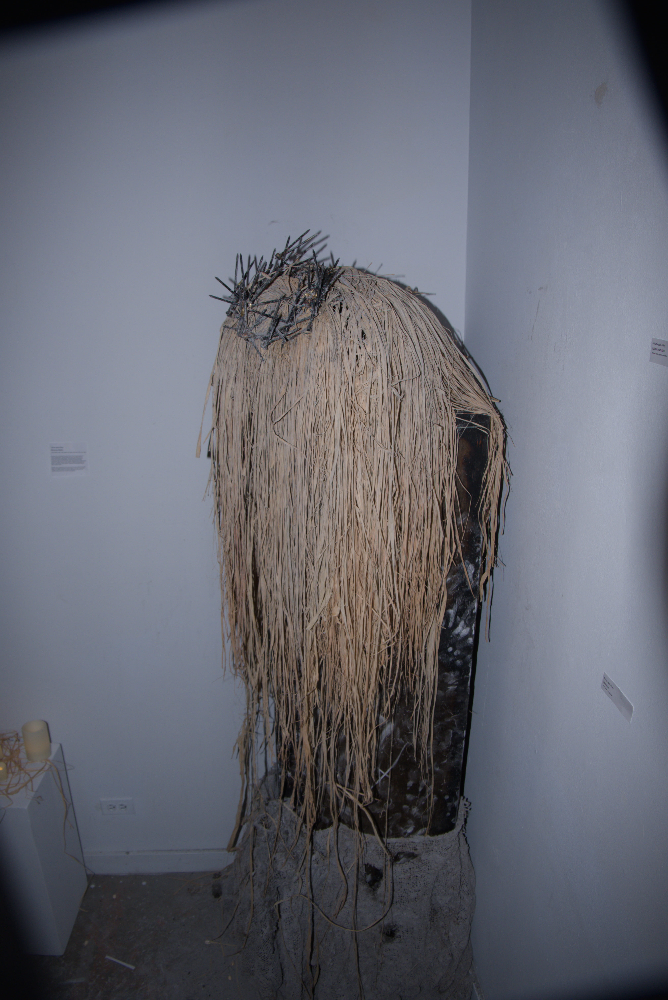
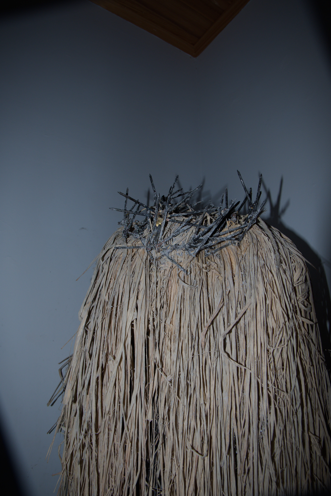
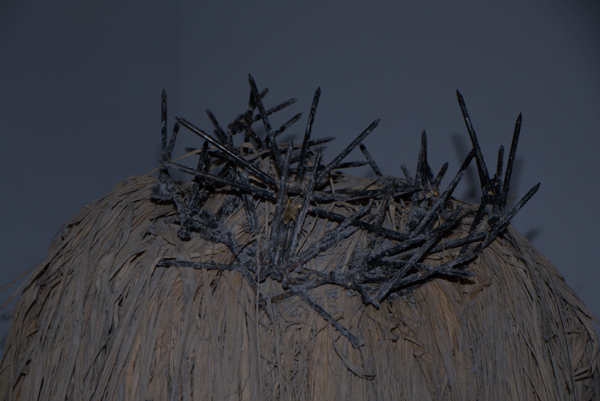
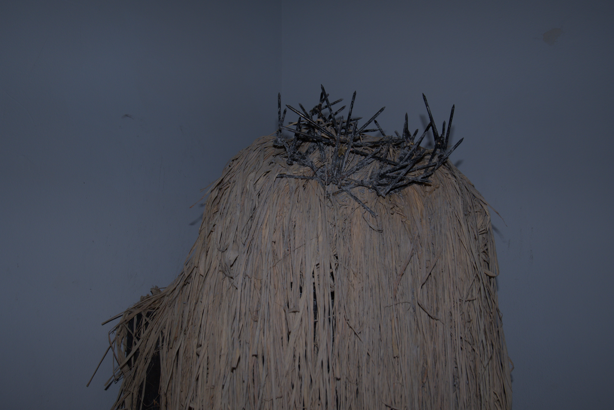
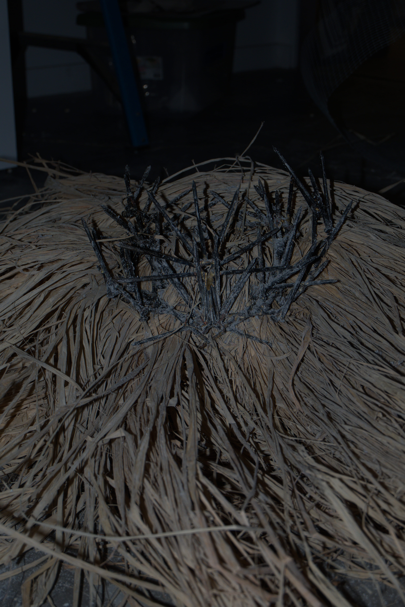
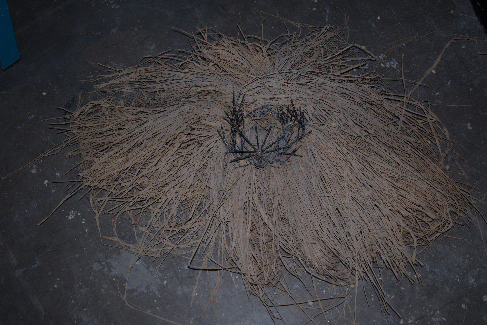
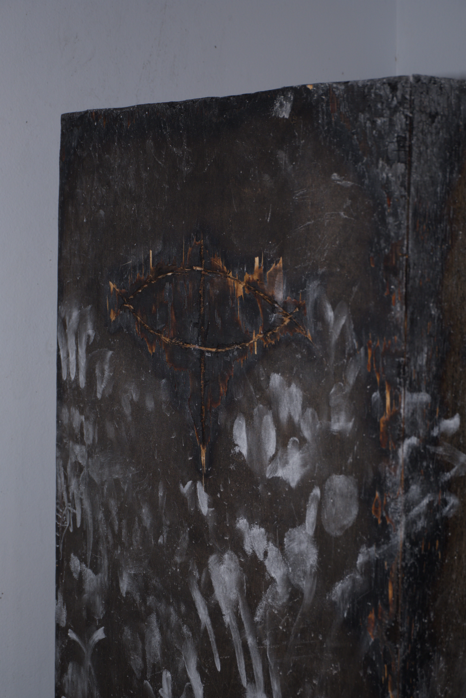

mmanwu biafra









Mmanwu is the combination of the Igbo words mmuo, meaning spirit, and onwu, meaning death. Together they make spirit of the dead — the general name of Igbo masquerades. This phrase defines the purpose of masquerade: physical manifestations of spirits and ancestors. Most mmanwu, like Ijele, appear during the day to commemorate festivals or the change of seasons. More obscure, frightening masquerades may appear under the fall of night, usually in response to the passing of an Igwe or other prominent elders.
Mmanwu vary in appearance and purpose, but a universal element is ecstatic dance and energetic movement. mmanwu biafra is a frenzied masquerade limited to its umbral confines. The entity is obfuscated and bound to its coffin-like prison, but its aura is felt from any distance.